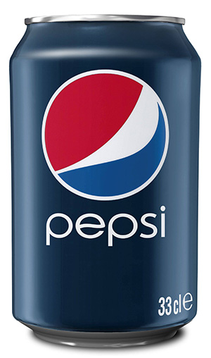

Pepsi
The original trademark application for Pepsi-Cola was filed on September 23, 1902 with registration approved on June 16, 1903. In the application's statement, Caleb Bradham describes the trademark, and indicated that the mark was in continuous use for his business since August 1, 1901. The Pepsi-Cola's description is a flavoring-syrup for soda water. The trademark expired on April 15, 1904.
A second Pepsi-Cola trademark is on record with the USPTO. The application date submitted by Caleb Bradham for the second trademark is Saturday, April 15, 1905 with the successful registration date of April 15, 1906, over three years after the original date. Curiously, in this application, Caleb Bradham states that the trademark had been continuously used in his business "and those from whom title is derived since in the 1905 application the description submitted to the USPTO was for a tonic beverage". The federal status for the 1905 trademark is registered and renewed and is owned by PepsiCo of Purchase, New York.
In 2014, the 1940 wordmark was used again and replacing the current wordmark on many cans.